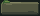
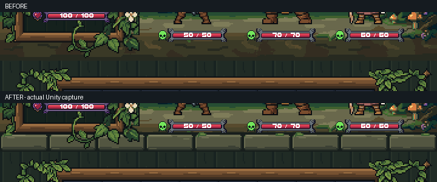
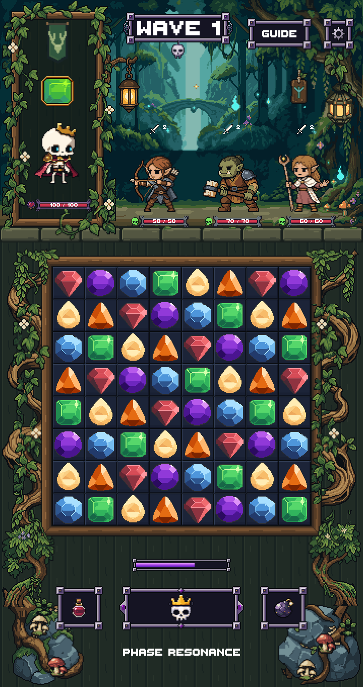
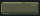
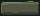
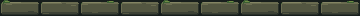
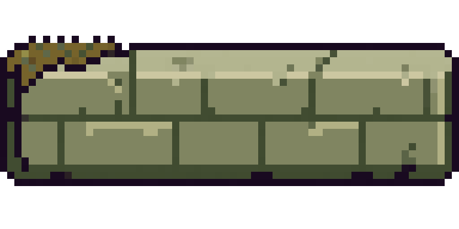
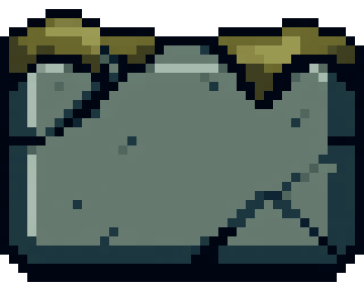

Mudstone_A · 40×16 · 8 colors
Native 1×

Nearest-neighbor 6×
Nine broad blocks use three native tile variations. Restrained moss, connected stone planes and clear joints give the battle platform a substantial front edge.
Review checkpoint: only the 32-pixel-high separator band changes. The board, HUD, actors, approved source art and lower root/rock decorations keep their current state. No merge.


Full side-by-side PNG · 1440×2720 capture
Native 1×

Nearest-neighbor 6×
Native 1×

Nearest-neighbor 6×
Native 1×

Nearest-neighbor 6×
Complete native 360×16 assembly:

Unity compilation and the explicit render test passed. Captures at 720×1360 and 1440×2720 match exact 2×/4× native rendering. Every pixel outside the separator band is unchanged. The blocks have fully opaque tile boundaries, so joints cannot reveal an accidental background gap. LibreSprite documents were saved, reopened and compared pixel-for-pixel.
These are actual Unity art-review captures with static approved actors and UI, not a new production combat or physical-device test.
PixelLab balance decreased by 7 subscription generations (697.20 → 690.20), with $0 USD credits used. Two completed Pixen calls cost 1 each. An additional 5-generation debit appeared after the cancelled Pro Flash request; no result or refund was returned. The stalled Pro request produced no result.
Usage and cancelled-job record
Selected olive source, before native cleanup:

Rejected gray study — too tall and cracked:

Report · Pixel validation · Unity test results · Selected generation lineage